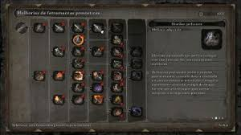
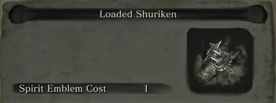
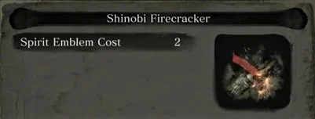
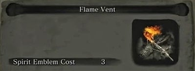
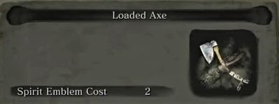
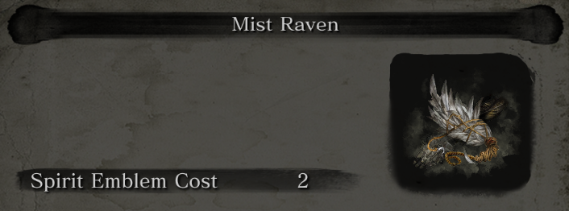
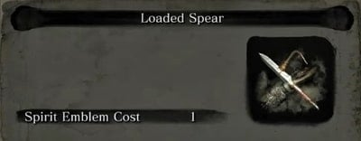
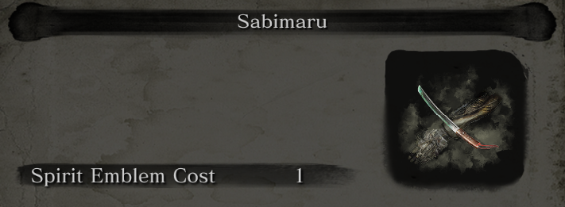
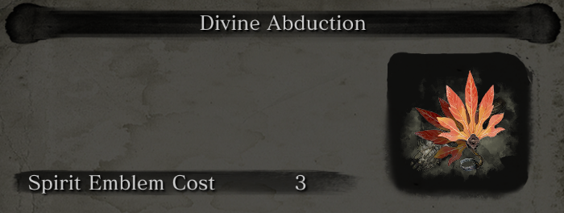
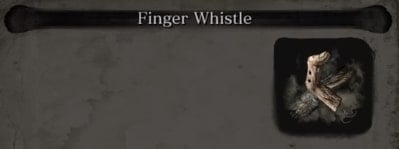

Todas as próteses de Sekiro: Shadows Die Twice

Sekiro (隻狼), comumente conhecido como "Lobo" (狼, Ōkami ), é o protagonista de Sekiro: Shadows Die Twice. Ao contrário de outros títulos da FromSoftware, como Dark Souls e Bloodborne, os jogadores não podem personalizar o personagem do jogador tão livremente, sendo, em vez disso, colocados em um curso para vivenciar o Sengoku Japan como o shinobi "Lobo de um braço só", Sekiro.
Equipamentos e Ferramentas Prostéticas
Armas protéticas são Equipamentos especiais em Sekiro: Shadows Die Twice. Elas são encontradas em todo o mundo e podem ser equipados no Braço Prostético e usado durante o combate e a exploração junto com a arma primária, a Kusabimaru. Essas armas, variam de Shurikens(estrelas ninjas) para o Duto Flamejante e o Machado Anexado, que são equipados por meio do Braço Prostético e podem ser trocados rapidamente, permitindo soluções de combate criativas e inovadoras para complementar o estilo de luta com sua arma principal, a Katana Elas são instaladas visitando o Escultorno do Templo em ruínas depois que seu item base for adquirido. As Ferramentas Protéticas também podem ser atualizadocom o Escultor, desde que os materiais adequados sejam entregues.
Shuriken Anexada
Uma arma de longo alcance pequena, porém mortal, "shuriken" pode ser traduzida literalmente como "lâmina de mão oculta".
Bombinha shinobi
Uma ferramenta protética equipada comFogos de artifício de Robert,que libera um clarão explosivo que deixam inimigos desnorteados, principalmente animais.
Duto Flamejante
Um dispositivo que lança uma onda de fogo, atacando inimigos e deixando sua arma coberta de fogo.
Machado Anexado
Um machado pesado que desfere golpes poderosos capazes de quebrar completamente escudos de madeira e a guarda do inimigo.
Corvo Da Névoa
Uma ferramenta protética carregada com a pena de um corvo da névoa, Fazendo com que Lobo consiga atacar o inimigo de diferentes ângulos por meio de teletransportes.
Lança Anexada
Uma ferramenta protética equipada com o Chifre Quebrado de Gyoubu que desfere ataques de estocada de longo alcance e arrasta os inimigos em direção ao portador.
Sabimaru
Uma ferramenta protética feita com a lâmina Sabimaru, permitindo uma série rápida de ataques junto com a espada.
Abdução Divina
Uma ferramenta protética carregada com um grande ventilador, capaz de causar grandes golpes de ar.
Apito de Dedo
Uma ferramenta protética criada pela adaptação de um dedo fino à prótese, pode ser usado para stunar certos inimigos e chefes, como o Demônio do Rancor.